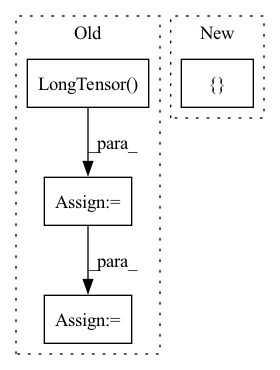

Pattern ID :17629
Before Change
else:
indices = list(range(self.num_edges))
random.shuffle(indices)
indices = torch.LongTensor( indices)
edges = indices
// perform `secure split` s.t. guarantees all splitted subgraph
// contains at least one edge.After Change
)[:num_edges_train]
if self.is_undirected():
graph_train[key] = torch.cat(
[ edge_feature, edge_featureIn pattern: SUPERPATTERN
Frequency: 3
Non-data size: 4
Instances Fragment ID: 58245864
Project Name: snap-stanford/deepsnap
Commit Name: ac9a40b249847208514871e227178adc9c506fda
Time: 2020-11-12
Author: xhe17@stanford.edu
File Name: deepsnap/graph.py
M Class Name: Graph
N Class Name: Graph
M Method Name: split_link_pred(2)
N Method Name: split_link_pred(2)
M Parent Class: object
N Parent Class: object
M File Name: deepsnap/graph.py
N File Name: deepsnap/graph.py
M Start Line: 1034
M End Line: 1108
N Start Line: 1032
N End Line: 1103
Before Change
labels_lengths = labels_lengths.squeeze(1)
batch_size = images.size(0)
logits = self.model(images)
input_lengths = torch.LongTensor( [logits.size(0)] * batch_size)
loss = self.criterion(logits, labels, input_lengths, labels_lengths) / batch_size
// Logging to TensorBoard by default
self.log("val_loss", loss)
return lossAfter Change
def validation_step(self, batch, batch_idx):
loss, bs = self.get_loss(batch)
return { "loss": loss, "bs": bs}
def configure_optimizers(self):
optimizer = torch.optim.Adam(self.parameters(), lr=Config.LR)
scheduler = ReduceLROnPlateau(optimizer, mode="min", factor=Config.LR_REDUCE_FACTOR, Fragment ID: 58245850
Project Name: pooya-mohammadi/crnn-pytorch
Commit Name: 7ec45dfb9a0ee95749b644ecf03508023a920adc
Time: 2022-06-05
Author: pooyamohammadikazaj@gmail.com
File Name: train.py
M Class Name: LitCRNN
N Class Name: LitCRNN
M Method Name: validation_step(3)
N Method Name: validation_step(3)
M Parent Class: pl.LightningModule
N Parent Class: pl.LightningModule
M File Name: train.py
N File Name: train.py
M Start Line: 43
M End Line: 52
N Start Line: 77
N End Line: 78
Before Change
labels_lengths = labels_lengths.squeeze(1)
batch_size = images.size(0)
logits = self.model(images)
input_lengths = torch.LongTensor( [logits.size(0)] * batch_size)
loss = self.criterion(logits, labels, input_lengths, labels_lengths) / batch_size
// Logging to TensorBoard by default
self.log("train_loss", loss)
return lossAfter Change
def training_step(self, batch, batch_idx):
loss, bs = self.get_loss(batch)
return { "loss": loss, "bs": bs}
def training_epoch_end(self, outputs) -> None:
loss = self.calculate_metrics(outputs)
self.log("train_loss", loss.item()) Fragment ID: 58245844
Project Name: pooya-mohammadi/crnn-pytorch
Commit Name: 7ec45dfb9a0ee95749b644ecf03508023a920adc
Time: 2022-06-05
Author: pooyamohammadikazaj@gmail.com
File Name: train.py
M Class Name: LitCRNN
N Class Name: LitCRNN
M Method Name: training_step(3)
N Method Name: training_step(3)
M Parent Class: pl.LightningModule
N Parent Class: pl.LightningModule
M File Name: train.py
N File Name: train.py
M Start Line: 31
M End Line: 40
N Start Line: 61
N End Line: 62